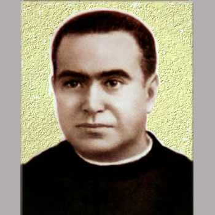

Isusovački blaženici
Svećenik · Profesor · Mučenik
Bl. Darío Hernández Morató
1880.–1936.
Darío Hernández Morató bio je učitelj retorike, župni suradnik i rektor u Valenciji. U građanskom ratu skrivao se do uhićenja i pogubljenja.
Tekst je preveden i prilagođen uz pomoć umjetne inteligencije.

Izvor slike
- Spomendan
- 29. rujna
- Zaštitništvo
- Nije navedeno u izvoru
- Životni vijek
- 1880.–1936.
- Datum smrti
- 29. rujna 1936.
U kalendaru zbirke koristi se dan smrti. Taj datum nije zasebna potvrda liturgijskoga spomendana.
Životopis
Darío Hernández Morató studirao je filozofiju i teologiju u Tortosi, a svećeničko ređenje primio je 1912. Predavao je retoriku u isusovačkom kolegiju u Zaragozi te služio u župama Valencije i Barcelone. Godine 1928. povjereno mu je rektorstvo važne isusovačke kuće u Valenciji. Djelovao je u obrazovanju i izravnom župnom pastoralu.
Početak građanskoga rata zatekao ga je u okolnostima progona. Kretao se gradom s lažnim ispravama i često mijenjao boravište, ali sredinom rujna 1936. ipak je uhićen. Pogubljen je krajem mjeseca, 29. rujna. U službenom imeniku pripada jedanaestorici isusovačkih mučenika iz Gandíje i Valencije.
Tekst je preveden i prilagođen uz pomoć umjetne inteligencije.